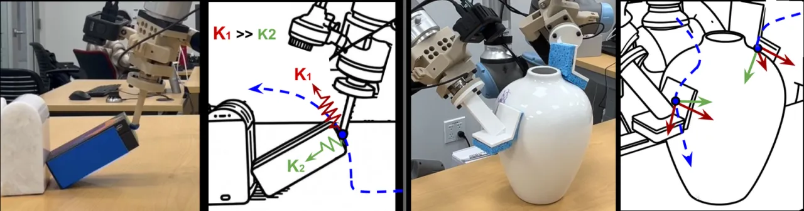
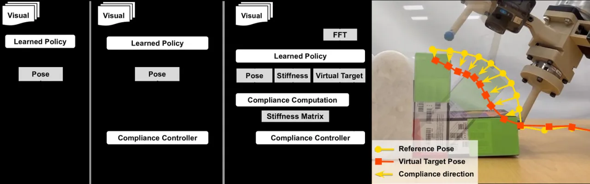
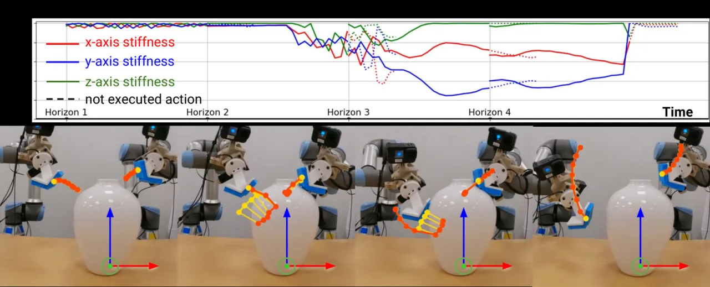
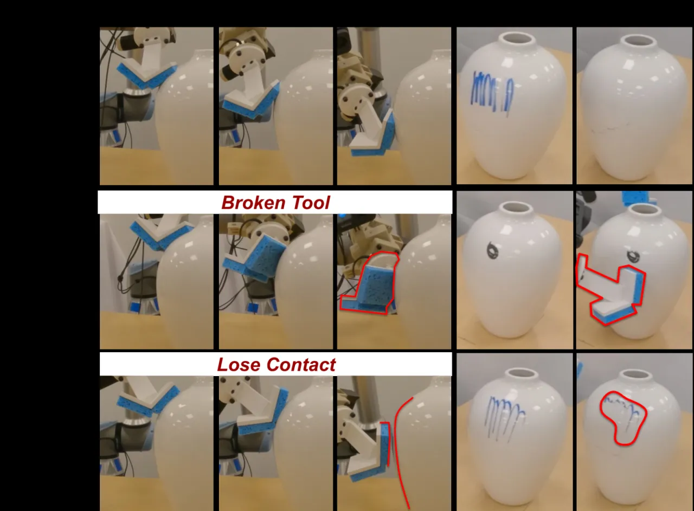

顺应性（compliance）在操作中至关重要，它在不确定性下平衡位置与力的控制，却几乎被今天只做位置控制的 visuomotor policy 忽略。ACP 在 diffusion policy 输出位姿之外，额外在线预测随空间、时间变化的近似刚度，从人类演示中学习“何时该顺应、沿哪个方向顺应”，在接触丰富任务上比 SOTA 视觉运动策略提升 50%+。
接触丰富操作（翻起物体、擦拭曲面）需要在位置与力之间取得平衡：接触前要精确跟踪轨迹，接触后要顺应表面、避免过大接触力。现有 visuomotor policy 只预测位姿、用固定刚度执行；而顺应性其实需要沿时间（接触前后不同）、沿空间（不同轴需要不同刚度）、以及随任务三个维度变化。此前方法要么手工预选参数，要么假设均匀恒定刚度，鲁棒性受限。
“…we estimate an approximate compliance profile with two useful properties: avoiding large contact forces and encouraging accurate tracking.” —— 不去求解完整（且病态的）顺应性参数，而是估计满足两条性质的近似顺应性。

ACP 在标准 diffusion policy 之上，让网络在预测参考位姿的同时，额外预测顺应性（近似刚度）。核心思想（Theorem 1）：在“接触力主导、接触力非零、非夹持接触”三条假设下，机器人只需在反馈力方向上使用低刚度、其余方向保持高刚度，即可满足接触约束——既避免大接触力，又不牺牲跟踪精度。

刚度矩阵按“方向”和“幅值”两部分构造：方向——低刚度 klow 对齐反馈力向量，其余所有方向用高刚度 khigh；幅值——klow 随力的大小以分段函数递减，力越大越顺应，从而平滑适配。这样避免了从人类演示中直接反解完整顺应性这一“ill-defined problem”。
系统用一颗 ATI mini-45 力/力矩传感器（7000Hz 采集，部分变体降采样到 250Hz）。论文对比两种力编码：(1) temporal convolution——32 个力时刻经 5 层 causal convolution → 768D 向量；(2) FFT encoding——把 6D wrench 转成频谱图 (6×30×17)，用带 coordinate convolution 的 ResNet-18 处理。二者与 CLIP-ViT-B/16 图像特征（224×224，两帧）一起做 transformer self-attention，并拼接 3 帧位姿历史。
策略每只手臂输出 19D：Reference pose (9D，位置 + 旋转矩阵前两行)、Virtual target pose (9D，由参考位姿与力经弹簧模型算出的真实顺应控制器目标)、以及 low-stiffness 方向的刚度幅值标量 (1D)。该表示让策略能在力控或导纳控制等不同底层接口上统一执行。
在两个接触丰富真机任务上评测。所有方法在相同数据、相同训练轮数下对比：ACP、ACP w/o FFT（用 causal convolution 代替 FFT 编码力）、Stiff policy（带力输入、均匀低层刚度 k=500 N/m 的标准 diffusion policy）、Compliant policy（不预测顺应性）。
用点状手指抵住墙角枢转，把物体翻起。15 种物体、230 段演示、训练 300 epoch；5 类场景各 20 次共 100 次测试。
| 场景（成功率 %） | Stiff | Compliant | ACP w/o FFT | ACP |
|---|---|---|---|---|
| Train Items | 20 | 80 | 90 | 90 |
| Unseen Items | 0 | 15 | 100 | 95 |
| Push & Flip | 5 | 15 | 100 | 95 |
| Varied Fixture | 35 | 5 | 95 | 100 |
| Unstable Fixture | 10 | 0 | 90 | 100 |
| Overall | 14 | 23 | 95 | 96 |
ACP 能容忍较大的位置不确定性同时维持接触；当物体较硬或不确定性方向不对齐时，baseline 会脱离接触。
双臂任务：左臂握持随机摆位的花瓶，右臂用海绵工具擦除随机形状的记号，200 段演示。评测“3 次擦拭内擦净”。（Stiff policy 把工具压断，被排除出最终对比。）
| 场景（成功率 %） | Compliant | ACP w/o FFT | ACP |
|---|---|---|---|
| Small Mark | 60 | 100 | 100 |
| Large Mark | 20 | 60 | 80 |
| Perturbation before contact | 25 | 75 | 100 |
| Perturbation after contact | 100 | 100 | 100 |
| Overall | 43.75 | 81.25 | 93.75 |


消融显示：FFT encoding 在“大面积记号”等需要多次擦拭的场景优于 temporal convolution（Large Mark 80 vs 60）；去掉顺应性预测的 Compliant policy 因摩擦敏感而失接触，均匀高刚度的 Stiff policy 则接触力过大甚至损坏工具——印证了“沿力方向低刚度、其余高刚度”这一近似顺应性设计的价值。
Theorem 1 需要接触力主导、接触力非零、非夹持接触三条假设，因此不适合快速运动或重物——这类情形下惯性力/重力可能超过接触力，近似顺应性不再成立。
实验只在 3D 平移空间评测顺应性；论文提到 6D（含旋转）在原理上可行，但未做验证。
训练时对力做 1 秒滑动平均滤波，引入了推理阶段不可得的 hindsight information，存在训练/推理不一致的隐患。
仅在 flipping 与 vase wiping 两个特定任务上演示，向更广泛接触丰富任务的泛化程度尚不清楚。